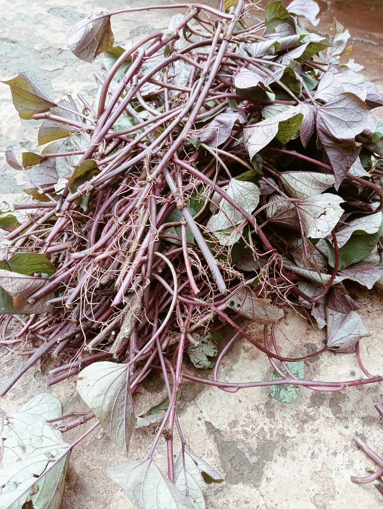
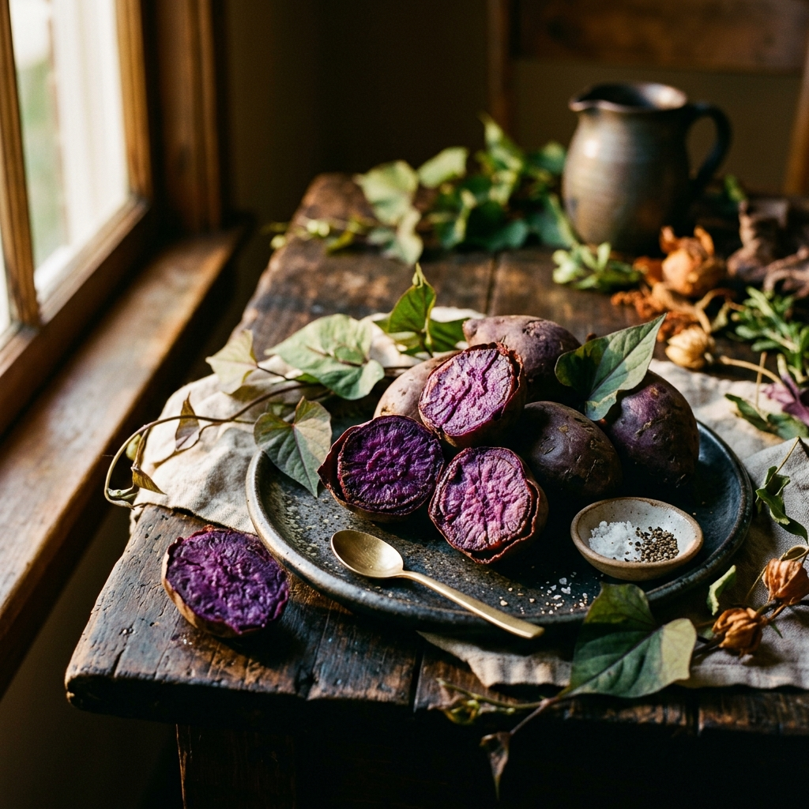
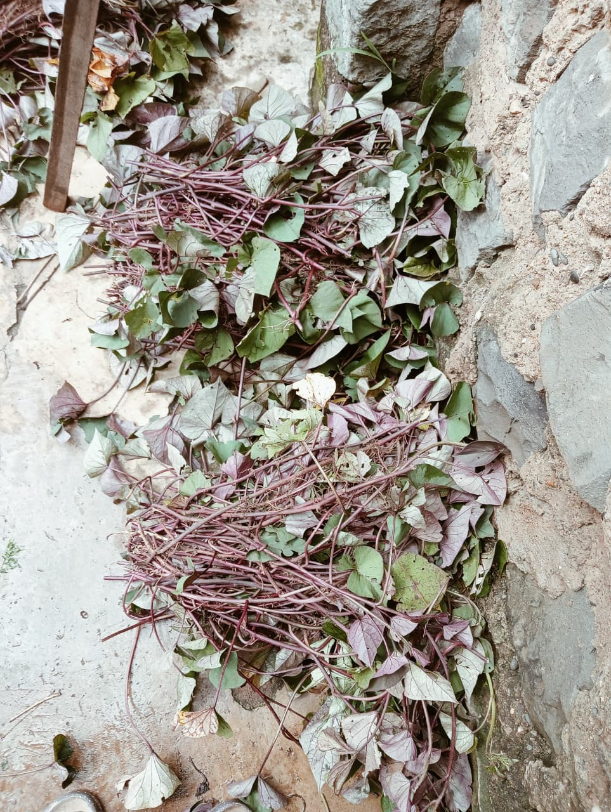
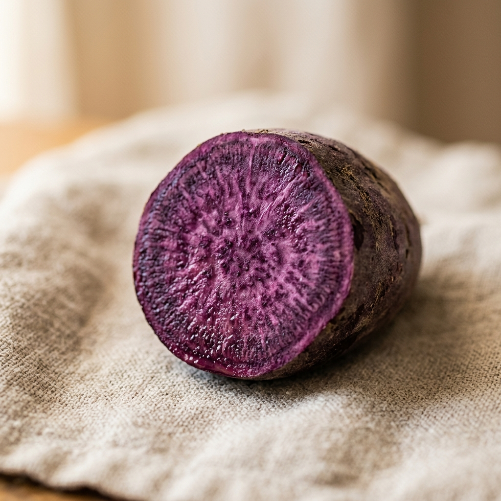
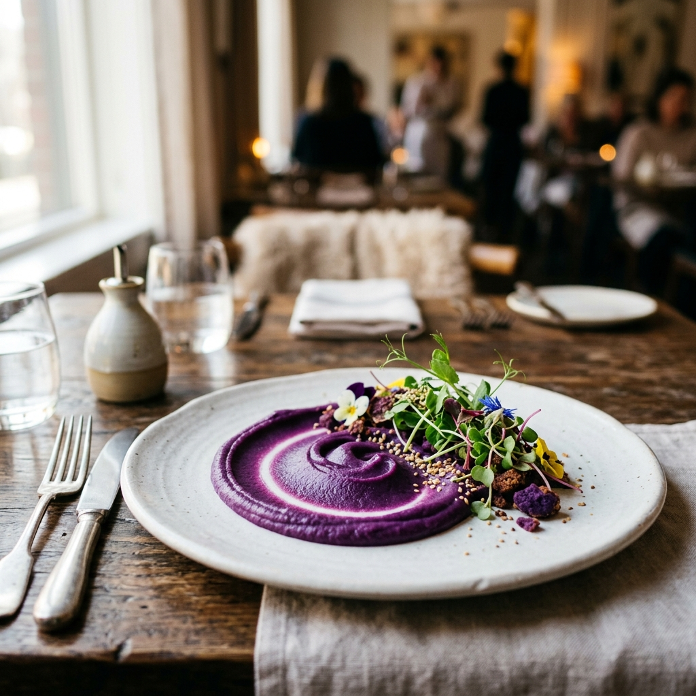

The Magic of Anthocyanins in Your Daily Diet
Discover how the pigments that give our potatoes their deep purple hue actively fight cellular aging and support heart health.
Read the ResearchHealthy living begins from the soil. Experience the rich taste and wellness benefits of premium organic purple sweet potatoes.

Arthi Tamu Harvest was born from a desire to discover healthier, more beautiful food experiences. While researching nutritious recipes that could offer both profound health benefits and stunning visual appeal, our journey led us to the purple sweet potato.
Inspired by the Blue Zones—regions where populations routinely live past 100 years—we noticed a recurring theme: the regular consumption of deep purple, antioxidant-rich foods.
"Because they were difficult to find locally, we made the decision to grow them ourselves. What started as a personal quest became Arthi Tamu Harvest."


Beyond their stunning color, purple sweet potatoes are nature's powerhouse of nutrition, wellness, and longevity support.
The deep purple pigment comes from anthocyanins, the same powerful antioxidants found in blueberries and blackberries.
Natural compounds that help reduce inflammation, supporting joint health and overall cellular wellness.
A lower glycemic index compared to regular potatoes means sustained energy without rapid blood sugar spikes.
Packed with dietary fiber that supports digestive health, gut microbiome balance, and lasting satiety.
Contains up to 3x more antioxidants than ordinary sweet potatoes, protecting cells from oxidative stress.
Elevates any culinary creation with its striking, naturally vibrant color that retains its beauty when cooked.
Explore our editorial insights on organic eating, superfoods, and holistic health.

NutritionDiscover how the pigments that give our potatoes their deep purple hue actively fight cellular aging and support heart health.
Read the ResearchHow incorporating purple sweet potatoes mirrors the dietary habits of Okinawa — the world's longest-living population.
Read the Research
Our purple sweet potatoes are carefully cultivated to deliver a rich, dense texture and a subtly sweet, earthy flavor profile that elevates any dish.
Whether roasted, mashed, or baked, they maintain their stunning vibrant color, turning every meal into a visual and culinary masterpiece.
Connect with us directly on WhatsApp to place an order or discuss partnerships.